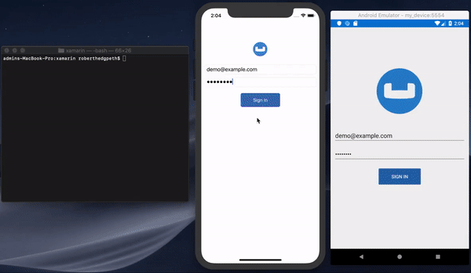

User Profile Sample: Data Sync Fundamentals
Introduction
Couchbase Sync Gateway is a key component of the Couchbase Mobile stack. It is an internet-facing synchronization mechanism that securely syncs data across devices as well as between devices and the cloud. Couchbase Mobile 2.x introduces a brand new websockets based replication protocol.
The core functions of the Sync Gateway include
-
Data Synchronization across devices and the cloud
-
Authorization & Access Control
-
Data Validation
This tutorial will demonstrate how to -
-
Setup the Couchbase Sync Gateway (in walrus mode) to sync content between multiple Couchbase Lite enabled clients. We will will cover the basics of the Sync Gateway Configuration.
-
Configure your Sync Gateway to enforce data routing, access control and authorization. We will cover the basics of Sync Function API.
-
Configure your Couchbase Lite clients for replication with the Sync Gateway.
-
Use "Live Queries" or Query events within your Couchbase Lite clients to be asyncronously notified of changes.
We will be using Xamarin (iOS/Android/UWP) apps as examples of Couchbase Lite enabled clients.
You can learn more about the Sync Gateway here
Prerequisites
This tutorial assumes familiarity with building Xamarin apps using C#, XAML, and Couchbase Lite.
-
If you are unfamiliar with the basics of Couchbase Lite, it is recommended that you walk through the following tutorials
-
Fundamentals of using Couchbase Lite 2.0 as a standalone database
-
Query Basics with a prebuilt version of Couchbase Lite database
-
-
iOS (Xcode 10.0+)
-
Android (SDK 21+)
-
UWP (Windows 10)
-
git (Optional)
This is required if you would prefer to pull the source code from GitHub repo. Create a free github account if you don’t already have one git can be downloaded from git-scm.org
-
curl HTTP client
-
You could use any HTTP client of your choice. But we will use curl in our tutorial. Download latest version from curl website
-
System Overview
We will be working with a simple "User Profile" app which we introduced in the Fundamentals Tutorial and extended in the Query Tutorial.
In this tutorial, we will be extending that app to support data sync.
The app does the following
-
Allows users to log in and create or update his/her user profile information. The user profile view is automatically updated everytime the profile information changes in the underlying database
-
The user profile information is synced with a remote Sync Gateway which then syncs it to other devices (subject to access control and routing configurations specified in the
sync function)
App Installation
Fetching App Source Code
You have two options
Option 1 : Git Clone
-
Clone the sync branch of the
User Profile Demoproject from GitHub. Type the following command in your terminalgit clone -b sync https://github.com/couchbaselabs/userprofile-couchbase-mobile-xamarin.git
Option 2 : Download .zip
-
Download the
User Profile Demoproject from here
Once all of the solution bits have been retrieved you can verify the installation, and run the app!
Sync Gateway 2.x Installation
There are several deployment options for the Sync Gateway. In our tutorial, we will be using the Sync Gateway installer to install the Sync Gateway on the same localhost as the mobile app.
Download the Installer
-
Download the latest Sync Gateway 2.x installer from Downloads page. Be sure to select the "Mobile" tab.
-
Launch the Sync Gateway from the command line with the sync-gateway-config-userprofile-walrus.json config file. This file is bundled with the User Profile mobile App source that you downloaded as per instructions in Fetching App Source Code section. The
sync-gateway-config-userprofile-walrus.jsonwill be located in the/path/to/UserProfileDemo/modules/userprofile/examples/srcfolderType following commands in the command terminal -
cd /path/to/sync-gateway-installation/couchbase-sync-gateway/bin ./sync_gateway /path/to/UserProfileDemo/content/modules/userprofile/examples/sync-gateway-config-userprofile-walrus.json -
You should see a many logs output to the console, similar to one below. For brevity, some of the log messages have been trimmed from output below
~/couchbase-sync-gateway/bin | => ./sync_gateway ~/projects/ios/UserProfileDemo/content/modules/userprofile/examples/sync-gateway-config-userprofile-walrus.json 2018-05-07T15:25:02.924-04:00 Enabling logging: [*] 2018-05-07T15:25:02.924-04:00 ==== Couchbase Sync Gateway/2.0.0(832;2d8a6c0) ==== 2018-05-07T15:25:03.028-04:00 Created user "demo@example.com" 2018-05-07T15:25:03.028-04:00 Starting admin server on 127.0.0.1:4985 2018-05-07T15:25:03.028-04:00 Changes+: Notifying that "userprofile" changed (keys="{_sync:user:demo@example.com}") count=2 2018-05-07T15:25:03.028-04:00 Cache: Received #1 ("_user/demo@example.com") 2018-05-07T15:25:03.028-04:00 Cache: Initialized cache for channel "*" with options: &{ChannelCacheMinLength:50 ChannelCacheMaxLength:500 ChannelCacheAge:1m0s} 2018-05-07T15:25:03.028-04:00 Cache: #1 ==> channel "*" 2018-05-07T15:25:03.028-04:00 Changes+: Notifying that "userprofile" changed (keys="{*}") count=3 2018-05-07T15:25:03.031-04:00 Starting server on :4984 ...
Now, let’s verify the installation
Try it Out
-
Open a browser and enter
http://localhost:4984in the address bar -
You should see a message similar one below
{"couchdb":"Welcome","vendor":{"name":"Couchbase Sync Gateway","version":"2.0"},"version":"Couchbase Sync Gateway/2.0.0(832;2d8a6c0)"}
Solution Overview
The User Profile demo app is a Xamarin.Forms based solution that supports iOS, Android, and UWP mobile platforms. The solution utilizes various design patterns and principles such as MVVM, IoC, and the Repository Pattern.
The solution consists of seven projects.
-
UserProfileDemo: A .NET Standard project responsible for maintaining view-level functionality.
-
UserProfileDemo.Core: A .NET Standard project responsible for maintaining viewmodel-level functionality.
-
UserProfileDemo.Models: A .NET Standard project consisting of simple data models.
-
UserProfileDemo.Repositories: A .NET Standard project consisting of repository classes responsible for Couchbase Lite database initilization, interaction, etc.
-
UserProfileDemo.iOS: A Xamarin.iOS platform project responsible for building the
.ipafile. -
UserProfileDemo.Android: A Xamarin.Android platform project responsible for building the
.apkfile. -
UserProfileDemo.UWP: A UWP platform project responsible for building the
.exefile.
Now that you have an understanding of the solution architecture let’s dive into the app!
Couchbase Lite Nuget
Before diving into the code for the apps, it is important to point out the Couchbase Lite dependencies within the solution. The Couchbase.Lite Nuget package is included as a reference within four projects of this solution:
| 1 | UserProfileDemo.Repositories |
| 2 | UserProfileDemo.iOS |
| 3 | UserProfileDemo.Android |
| 4 | UserProfileDemo.UWP |
The Couchbase.Lite Nuget package contains the core functionality for Couchbase Lite. In the following sections you will dive into the capabilities it the package provides.
Data Model
If have followed along the tutorial on Query Basics, you can skip this section and proceed to the Sync Gateway Configuration. section We have not made any changes to the Data model for this tutorial.
Couchbase Lite is a JSON Document Store. A Document is a logical collection of named fields and values.The values are any valid JSON types. In addition to the standard JSON types, Couchbase Lite supports some special types like Date and Blob.
While it is not required or enforced, it is a recommended practice to include a "type" property that can serve as a namespace for related.
The "User Profile" Document
The app deals with a single Document with a "type" property of "user". The document ID is of the form "user::<email>".
An example of a document would be
{
"type":"user",
"name":"Jane Doe",
"email":"jane.doe@earth.org",
"address":"101 Main Street",
"image":CBLBlob (image/jpg),
"university":"Missouri State University"
}UserProfile
The "user" Document is encoded to a class named UserProfile.
public class UserProfile
{
public string type => "user";
public string Id { get; set; }
public string Name { get; set; }
public string Email { get; set; }
public string Address { get; set; }
public byte[] ImageData { get; set; }
public string Description { get; set; }
public string University { get; set; }
}The "University" Document
The app comes bundled with a collection of documents of type "university". Each Document represents a university.
{
"type":"university","web_pages": [
"http://www.missouristate.edu/"
],
"name": "Missouri State University",
"alpha_two_code": "US",
"state-province": MO,
"domains": [
"missouristate.edu"
],
"country": "United States"
}Sync Gateway Configuration
The Sync Gateway Configuration determines the run time behavior of the Sync Gateway and is typically specified in a JSON file. You can also use the Sync Gateway Config REST Endpoint to specify the configuration. In our application, we will be defining it in the sync-gateway-config-userprofile-walrus.json file.
-
Open the
sync-gateway-config-userprofile-walrus.jsonfile using any text editor of your choice. Thesync-gateway-config-userprofile-walrus.jsonis located in the app bundle at/path/to/UserProfileDemo/modules/userprofile/examples/src.Locate the following settings in the configuration file -
-
The users setting.
The list of users recognized by the Sync Gateway is specified using the
usersconfig setting. The Sync Gateway will only authorize syncronization requests from valid/recognized users.For simplicity, we have hardcoded the
userto be "demo@example.com" and thepasswordof "password". In a production app, you would likely configure the user dynamically on the Sync Gateway through the User Admin REST API instead of hardcoding it this way."userprofile": { "users": { "demo@example.com": { "password": "password"} }, .... }If you want to want to use a different user, then add the credentials of that user to this configuration setting and restart the Sync Gateway. -
The server setting
This is where we specify the URL of the server. We have specified this to be
walrus. This is an in-memory-only mode that is only recommended for development environments. We will be configuring Sync Gateway to operate in this mode. In a production deployment, the Sync Gatway should be backed up by a Couchbase Server.This is specified using the
serverconfig setting"userprofile": { "server": "walrus:", .... }
You can learn more about the walrus mode in this guide.
Sync Function
The Sync Function is a Javascript function that is specified as part of the Sync Gateway Configuration. The Sync Function handles data validation, authorization, access control and data routing.
-
Open the
sync-gateway-config-userprofile-walrus.jsonfile using any text editor of your choice. Thesync-gateway-config-userprofile-walrus.jsonis located in the app bundle at/path/to/UserProfileDemo/content/modules/userprofile/examples. -
Locate the
syncsetting and follow along with the rest of the sections below
Authorization
We use the requireUser() API to verify that the email property specified in the Document matches the Id of the user making the request. The Id of the user making the request is specified in the Authorization header. We will be using Basic Authentication in our application.
function sync(doc, oldDoc) {
....
/* Authorization */
// Verify the user making the request is the same as the one in doc's email
requireUser(doc.email);
.....
}Data Validation
In this case, we are doing some basic validation of the contents of the Document
function sync(doc, oldDoc) {
...
/* Data Validation */
if (!isDelete()) {
// Validate the presence of email fields
validateNotEmpty("email", doc.email); (1)
// Check if document is being created / added for first time
// We allow any user to create the document
if (isCreate()) {
// Validate that the document Id _id is prefixed by owner.
var expectedDocId = "user" + "::" + doc.email;
if (expectedDocId != doc._id) { (2)
throw({forbidden: "user doc Id must be of form user:email"});
}
} else {
// Validate that the email hasn't changed.
validateReadOnly("email", doc.email, oldDoc.email); (3)
}
}
// Verify that specified property exists
function validateNotEmpty(key, value) {
if (!value) {
throw({forbidden: key + " is not provided."});
}
}
// Verify that specified property value has not changed during update
function validateReadOnly(name, value, oldValue) {
if (value != oldValue) {
throw({forbidden: name + " is read-only."});
}
}| 1 | Verify that the email property is not null. If it’s null, we throw a JS exception (see validateNotEmpty() function) |
| 2 | If this a new document, then verify that the Id of the Document is of the required format (i.e. "user::<email>"). We throw an exception if that’s not the case. |
| 3 | If this is a document update, then verify that the email property value has not changed. Again, we throw an exception if that’s not the case. |
You can learn more about the Sync Function in this guide
Data Routing
channels are a mechanism to "tag" documents and is typically used to seggregate documents based on the contents of the document. Combined with access API and requireAccess API, it can be used to enforce Access Control. As we shall see in a later section, clients can use channels to pull only a subset of documents.
/* Routing */
// Subsequent updates to document must be authorized
var email = getEmail();
// Add doc to the user's channel.
channel("channel." + email); (1)
// get email Id property
function getEmail() {
return (isDelete() ? oldDoc.email : doc.email);
}| 1 | The channel comes into existance the first time a document is added to it. In our case, the channel name is generated from the email property specified in the document |
Access Control
You can enforce access control to channels using the access API. This will ensure that only users with access to a specific channel will be able to retrieve documents in the channel.
/* Access Control */
// Give user read access to channel
if (!isDelete()) {
// Deletion of user document is essentially deletion of user
access(email,"channel." + email)
}Starting Replication
Two-way Replication between the app and the Sync Gateway is enabled when user logs into the app.
-
Open the DatabaseManager.cs file and locate the
Startmethod.public async Task StartReplicationAsync(string username, string password, string[] channels, ReplicatorType replicationType = ReplicatorType.PushAndPull, bool continuous = true) -
Next, we create an instance of the
ReplicatorConfiginstance that specifies the source and target database and you can optionally, override the default configuration settings.var configuration = new ReplicatorConfiguration(database, targetUrlEndpoint) (1) { ReplicatorType = replicationType, (2) Continuous = continuous, (3) Authenticator = new BasicAuthenticator(username, password), (4) Channels = channels?.Select(x => $"channel.{x}").ToArray() (5) };1 Initialize with Sourceas the local Couchbase Lite database and theremotetarget as the Sync Gateway2 Replication typeofPushAndPullindicates that we require two-way sync. A value of.Pullspecifies that we only pull data from the Sync Gateway. A value of.Pushspecifies that we only push data.3 The Continuousmode is specified to be true which means that changes are synced in real-time. A value of false which implies that data is only pulled from the Sync Gateway.4 This is where you specify the authentication credentials of the user. In the Authorization section, we discussed that the Sync Gateway can enforce authorization check using the RequireUserAPI.5 The Channelsare used to specify the channels to pull from. Only documents belonging to the specified channels are synced. This is subject to Access Control rights enforced at the Sync Gateway. This means that if a client does not have access to documents in a channel, the documents will not be synched even if the client specifies it in the replicator configuration. -
Initialize the
Replicatorwith theReplicatorConfiguration_replicator = new Replicator(configuration); -
We attach a callback listener to the
Replicatorto be asynchronously notified of state changes. This could be useful for instance, to inform the user of the progress of the replication. This is an optional step_replicatorListenerToken = _replicator.AddChangeListener(OnReplicatorUpdate); -
Which is handled by a method called
OnReplicatorUpdatevoid OnReplicatorUpdate(object sender, ReplicatorStatusChangedEventArgs e) { var status = e.Status; switch (status.Activity) { case ReplicatorActivityLevel.Busy: Console.WriteLine("Busy transferring data."); break; case ReplicatorActivityLevel.Connecting: Console.WriteLine("Connecting to Sync Gateway."); break; case ReplicatorActivityLevel.Idle: Console.WriteLine("Replicator in idle state."); break; case ReplicatorActivityLevel.Offline: Console.WriteLine("Replicator in offline state."); break; case ReplicatorActivityLevel.Stopped: Console.WriteLine("Completed syncing documents."); break; } if (status.Progress.Completed == status.Progress.Total) { Console.WriteLine("All documents synced."); } else { Console.WriteLine($"Documents {status.Progress.Total - status.Progress.Completed} still pending sync"); } } -
Start the replicator
_replicator.Start();
Stopping Replication
When user logs out of the app, the replication is stopped before the database is closed.
-
Open the DatabaseManager.cs file and locate the
Stopfunction.public void StopReplication() -
Stop the replicator and remove any associated change listeners
_replicator.RemoveChangeListener(_replicatorListenerToken); _replicator.Stop();All open replicators must be stopped before database is closed. There will be an exception if you attempt to close the database without closing the active replicators.
Query Events / Live Queries
In couchbase Lite 2.0, the app can set up live queries in order to be asynchronously notified of changes to the database that affect the results of the query. This would be very useful for instance, to keep a UI View up-to-date with the results of a query.
In our app, the user profile view is kept up-to-date with a live query that fetches the user profile data that is used to populate the view. This means that, if the replicator pulls down changes to the user profile, it will be automatically reflected in the view.
-
Open the UserProfileRepository.cs file and locate the
GetAsyncfunction. Calling this method and passing in a value for theFunc<UserProfile,Task>namedonProfileUpdatedimplies that the caller wishes to be notified of any changes to query results via delegation.public async Task<UserProfile> GetAsync(string userProfileId, Action<UserProfile> userProfileUpdated) -
Build the Query using
QueryBuilderAPI. If you are unfamiliar with this API, please check out this tutorial._userQuery = QueryBuilder .Select(SelectResult.All()) .From(DataSource.Database(database)) .Where(Meta.ID.EqualTo(Expression.String(userProfileId))); (1)1 We query for documents based on document Id. In our app, there should be exactly one user profile document corresponding to this Id. -
Attach listener callback to the query to make it live
_userQueryToken = _userQuery.AddChangeListener((object sender, QueryChangedEventArgs e) => (1) { if (e?.Results != null && e.Error == null) { foreach (var result in e.Results.AllResults()) { var dictionary = result.GetDictionary("userprofile"); (2) if (dictionary != null) { userProfile = new UserProfile (3) { Name = dictionary.GetString("name"), (4) Email = dictionary.GetString("email"), Address = dictionary.GetString("address"), University = dictionary.GetString("university"), ImageData = dictionary.GetBlob("imageData")?.Content }; } } if (userProfile != null) { userProfileUpdated.Invoke(userProfile); } } });1 Attach a listener callback to the query. Attaching a listerner automatically makes it live so any time there is a change in the user profile data in the underlying database, the callback would be invoked. 2 The SelectResult.all()method is used to query all the properties of a document. In this case, the document in the result is embedded in a dictionary where the key is the database name, which is "userprofiles". So, we retrieve theDictionaryObjectat key "userprofiles".3 Create an instance of UserProfile. This will be populated with the query results. 4 We use appropriate type getters to retrieve values and populate the UserProfile instance
Exercises
Exercise 1
In this exercise, we will observe how changes made on one app are synced across to the other app
-
The app should be running in two simulators/emulators side by side
-
Log into both the simulators/emulators with same userId and password. Use the values "demo@example.com" and "password" for user Id and password fields respectively
-
On one simulator/emulator, enter values in the user and address fields.
-
Confirm that changes show up in the app on the other simulator/emulator.
-
Similarly, make changes to the app in the other simulator/emulator and confirm that the changes are synced over to the first simulator/emulator.
Exercise 2
In this exercise, we will observe changes made via Sync Gateway are synced over to the apps
-
Make sure you complete Exercise 1. This is to ensure that you have the appropriate user profile document (with document Id of "user::<emailId>") created through the app and synced over to the Sync Gateway.
-
Open the command terminal and issue the following command to get the user profile document via GET Document REST API . We will be using
curlto issue the request. If you haven’t done so, please install curl as indicated in the Prerequisites sectioncurl -X GET \ http://localhost:4985/userprofile/user::demo@example.com \ -H 'Accept: application/json' \ -H 'Cache-Control: no-cache' \ -H 'Content-Type: application/json' -
Your response should look something like the response below. The exact contents depends on the user profile information that you provided via your mobile app.
{ "_attachments": { (2) "blob_1": { "content_type": "image/jpeg", "digest": "sha1-S8asPSgzA+F+fp8/2DdIy4K+0U8=", "length": 14989, "revpos": 2, "stub": true } }, "_id": "user::demo@example.com", "_rev": "2-3a76cfa911e2c54d1e82b29dbffc7f4e5a9bc265", (1) "address": "", "email": "demo@example.com", "image": { "@type": "blob", "content_type": "image/jpeg", "digest": "sha1-S8asPSgzA+F+fp8/2DdIy4K+0U8=", "length": 14989 }, "name": "", "type": "user", "university": "Missouri State University" }1 Record the revision Id of the document. You will need this when you update the document 2 If you had updated an image via the mobile app, you should see an "_attachments" property. This entry holds an array of attachments corresponding to each image blob entry added by the mobile app. This property is added by the Sync Gateway when it processes the document. You can learn more about how image Blob types are mapped to attachments here. -
In the command terminal, issue the following command to update the user profile document via PUT Document REST API
curl -X PUT \ 'http://localhost:4985/userprofile/user::demo@example.com?rev=3-12d203d6024c8b844c5ed736c726ac63379e05dc' \ -H 'Accept: application/json' \ -H 'Cache-Control: no-cache' \ -H 'Content-Type: application/json' \ -d '{ "address": "101 Main Street", (1) "email": "demo@example.com", "image": { "@type": "blob", "content_type": "image/jpeg", "digest": "sha1-S8asPSgzA+F+fp8/2DdIy4K+0U8=", "length": 14989 }, "name": "", "type": "user", "university": "Missouri State University" }'1 I updated the university field via the REST API. You can choose to update any other profile information -
Confirm that you get a HTTP "201 Created" status code
-
As soon as you update the document via the Sync Gateway REST API, confirm that the changes show up in the mobile app on the simulator/emulator.

| From Exercise 2 above, you observed that changes made on the Sync Gateway are propagated to the Couchbase Lite clients. However, if you tried to update the attachment / image using the Attachments REST API, you would not see the image getting updated on the client side. This is a known issue in 2.0 and should be fixed in the next release. |
Handling Conflicts during Data Syncronization
Data conflicts are inevtiable in an environment where you can potentially have multiple writes updating the same data concurrently. Couchbase Mobile 2.0 supports Automated Conflict Resolution.
You can learn more about automated conflict resolution in this blog post.
Learn More
Congratulations on completing this tutorial!
This tutorial walked you through an example of how to use a Sync Gateway to synchronize data between Couchbase Lite enabled clients. We discussed how to configure your Sync Gateway to enforce relevat access control, authorization and data routing between Couchbase Lite enabled clients.
Check out the following links for further details